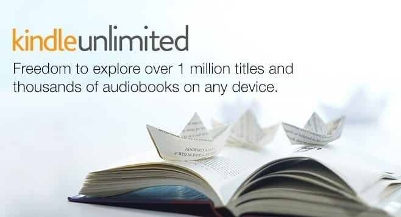
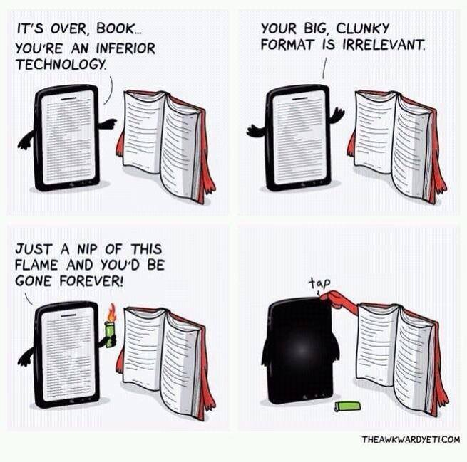

I am going to explain how Kindle works for those of us that do not know. The decision making process to switch to Kindle or move to paperback is different per person. This blog post will help you make a more informed decision.
For reader and writer there is a price difference
The first and foremost reason to use Kindle is the pricing of digital books. It is much cheaper to buy a digital copy of a book rather than a physical copy. A few years ago, I experimented with selling a digital book versus a paperback. At $3 I received $2.80 per book from Amazon Kindle when someone purchased my book. At $5 I received $1 from Amazon. Most of the money from the paperback went into actually creating the physical book. The digital version was much more convenient and profitable for me as a writer.
For the reader, however, almost every Kindle book is cheaper than it's paperback equivalent. It simply does not have to be expensive. There is no physical production and most of the ebook logistics is done automatically by Amazon's software. It is already scaled for the rest of the books on Kindle which simply means there are no tangible work hours done by people for that specific book.
This means Kindle is cheaper…
With Kindle you can get the "Unlimited" service
I believe with Kindle it is possible to get "Kindle Unlimited" for about $10 per month. Quickly explained, it is like netflix but with books. Authors make a deal with Amazon to allow their book to be in the Unlimited library streaming service and we read it on demand whenever we want and we can switch books to whichever books are on the streaming service at the time. They can be taken off and put on at any time.
To compare this with Netflix, movie/show producers make a deal with Netflix and allow them to place their show/movie on their streaming service. We can see many different types of videos from many different genres. We don't have to finish each one and we definitely are not restrained to a specific show or season. This is the same parallel type of service Kindle Unlimited offers but instead of videos, shows & movies it is books.
Kindle has a purchasable, dynamic library with many books to vet…
It is cross platform…
You do not need a Kindle device to read from Amazon. A smartphone, laptop or regular tablet is enough. Though you may find eye strain to be a problem after a few weeks of reading everyday. For me personally a simple blue light filter for each device was enough to ward off tears from reading. Though I am going back to paperback as the physical copies are my preference.
There is cloud sync, meaning each device is synchronized to your location in the book. In addition all the books available to you are also placed on each device so long as there is an internet connection. The cloud sync is what allows for the device to really be cross-platform.
Kindle devices are not required…
Why not use Kindle?
For me, the reason I am switching away from Kindle is the ease of use. Yes, you heard that right. E-books are too easy to obtain, too easy to read, too easy to not read & in too high quantities. The value of the book itself just doesn't feel real enough for me when I purchase an ebook. Yes, it is easy to read on any device but it is also easy to turn the app off and move on.
I have a hard time disciplining myself to read ebooks and I believe other people may experience the same thing. I view a mildly cumbersome book as a good thing. This is how I know what I am learning is real. The material is something I can touch and feel. In addition I get to add it to my personal library at home. It adds to the decor of my home.
Discipline may be a huge issue for you…
Should you use paperback?
The two biggest cons to using paperbacks are the physical space/weight we are burdened with and the notes that we place in them. Books can become cumbersome & notes are destructible. No physical book is an exception to this. I need a backpack every time I carry a book around just to maintain my mobility and any mad feline, dog, pyro, or person can come in my apartment and tear at each and every one of my books if they so pleased.
The notes, ah the notes! Please no! Not the notes! Kindle's cloud is relatively indestructible in comparison. Our books therefore need to be in safe storage from both the elements of weather and living things. This additional maintenance can deter many people from reading physical books in the first place.
Notes, in addition, can have hyperlinks and embedded parts. Ebooks throughout themselves have the ability to link to applications or embed outside content within them. I went through two ebooks that were fantastic reads in their digital format. Throughout them they linked to blog posts and application downloads to learn how to use Python. Had I not gone through that book I would not have gotten an A in my python class in college.
Notes are tougher to maintain with paperback…
The answer to your question
The answer is up to you. Theoretically as you can see it appears Kindle is superior to paperback. But like many things the theory does not always end up as reality for each and every individual. This means that though Kindle is great and ebooks are convenient you may not find it fits with how you discipline yourself. As for me, I am going to paperback once again.